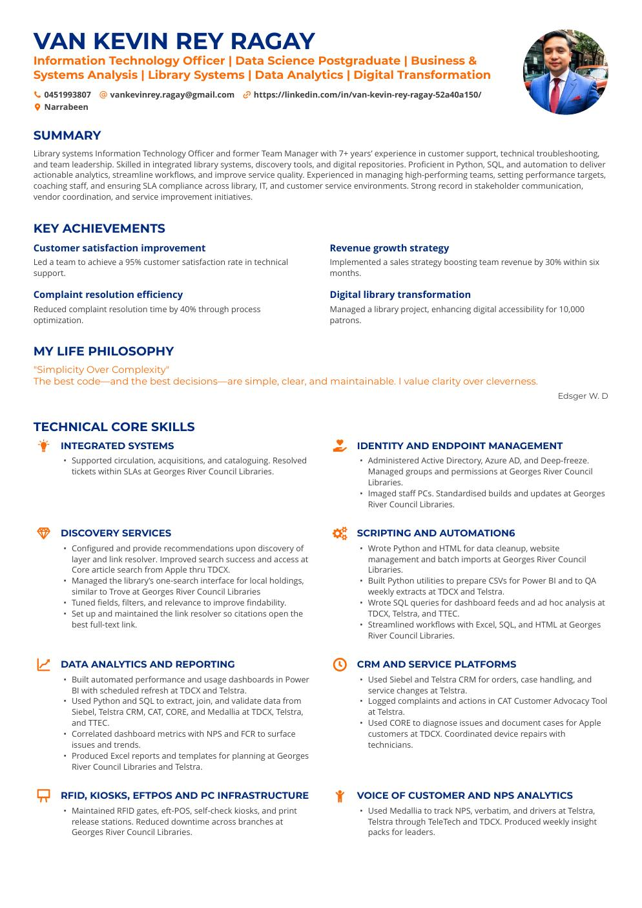

LIBRARY TECHNOLOGY • DATA • DIGITAL TRANSFORMATION
Van Kevin Rey Ragay
Information Technology Officer & Data Science Postgraduate
I work across library systems, analytics, automation and service improvement. My focus is simple: reliable technology, useful data and better digital experiences.

Based in Sydney, AustraliaPROFILE
Technology built around people and services.
Library systems Information Technology Officer and former Team Manager with 7+ years of experience across customer support, technical troubleshooting and team leadership. Experienced with integrated library systems, discovery services, Python, SQL, analytics, vendor coordination and service improvement.
CAPABILITIES
Technical core
Library & Discovery Systems
Integrated library systems, circulation, acquisitions, cataloguing, discovery layers, link resolvers, RFID and self-service technology.
Data & Analytics
Python, SQL, Power BI, Excel, data extraction, validation, dashboarding, NPS and performance analysis.
Infrastructure & Identity
Active Directory, Azure AD, endpoint management, PC imaging, Microsoft 365, hardware and network troubleshooting.
Automation & Web
Python utilities, HTML, CSV preparation, batch imports, workflow optimisation and website content management.
Service Management
Incident triage, root cause analysis, SLA management, escalations, security, privacy and accessibility.
Leadership
Team development, coaching, training, stakeholder communication, vendor coordination and continuous improvement.
EXPERIENCE
Professional journey
Library Systems Information Technology
Georges River Council • Sydney
Support library technologies, train staff and patrons, improve online services, optimise data processes, develop LMS test plans, review technology architecture and maintain technical documentation.
Technical Support Team Manager, Apple
TDCX • Cebu City
Led 12+ support technicians, improved ticket resolution efficiency by 35%, maintained 95%+ customer satisfaction and managed more than 200 support requests per week.
Technical, Sales & Complaints Team Leader
Telstra
Led technical support, complaint resolution and sales performance while analysing team metrics and coordinating service improvements.
Team Leader, Service Delivery
TTEC • Cebu
Led 15–20 consultants, achieved 95% CSAT and 87% first call resolution, supported sales targets and maintained a 98% retention rate.
EDUCATION & TRAINING
Academic foundation
Master's Degree, Data Processing
Sydney Polytechnic Institute
Advanced Diploma, Information Technology, Cyber Security
Abbey College Australia
Cyber/Computer Forensics and Counterterrorism
EC-Council University
BA English, Applied Linguistics
Cebu Technological University
Training: Provide Basic Emergency Life Support • Provide Cardiopulmonary Resuscitation • Provide First Aid • ACS Professional Year
RECOGNITION
Awards
Georges River Council Libraries Success AwardeeGRC Libraries Newsletter Staff Shoutout AwardeeTelstra Top Performing Leader AwardeeTelstra Frontline AwardeeTTEC Brilliance Nominee AwardeeTTEC Top Seller Awardee
LET'S CONNECT